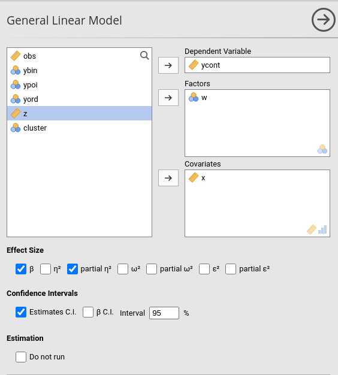
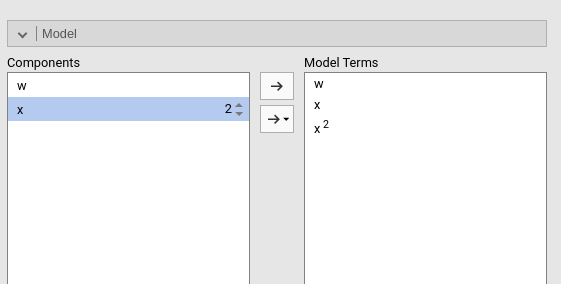
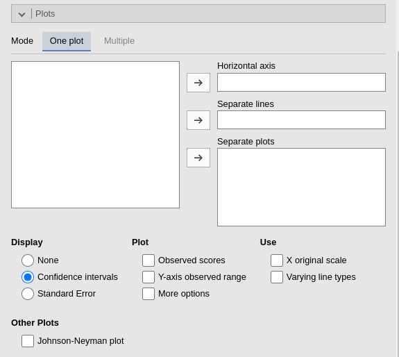

General Linear Model
General Linear Model module of the GAMLj suite for jamovi
3.0.0
The module estimates a general linear model with categorical and/or continuous variables, with options to facilitate estimation of interactions, simple slopes, simple effects, etc.
The module can estimate OLS linear models for any combination of categorical and continuous variables, thus providing an easy way for multiple regression, ANOVA, ANCOVA and moderation analysis.
Estimates
The module provides ANOVA tables and parameters estimates for any estimated model. Variance-based effect size indices (eta, partial eta, partial omega, partial epsilon, and beta) and mean comparisons (Cohen’s d) are optionally computed.
Variables definition follows jamovi standards, with categorical independent variables defined in Factors and continuous independent variables in Covariates.

Effect size indices are optionally computed by selecting the following options (see Details: GLM effect size indices):
- \(\beta\) : standardized regression coefficients
- \(\eta^2\): (semi-partial) eta-squared
- \(\eta^2\)p : partial eta-squared
- \(\omega^2\) : omega-squared
- \(\omega^2\)p : partial omega-squared
- \(\epsilon^2\) : epsilon-squared
- \(\epsilon^2\)p : partial epsilon-squared
Confidence intervals of the parameters can be also selected in Options tab (see below).
Please check the details in Details: GLM effect size indices
The complete set of options for this panel is:
| Effect Size |
The effect size to show in tables. They can be: "eta" for
eta-squared, partial eta' for partial eta-squared,
'omega' for omega-squared, 'omega partial' for
partial omega-squared, 'epsilon' for epsilon-squared,
'epsilon partial' for partial epsilon-squared and
'beta' for standardized coefficients (betas). Default is
"beta" and "eta partial".
|
| Estimates C.I. | Non standardized coefficients (estimastes) CI in tables if flagged |
| β C.I. | Standardized coefficients CI in tables if flagged |
| Confidence level | a number between 50 and 99.9 (default: 95) specifying the confidence interval width for the plots. |
| Do not run | If flagged, the results are not updated each time an option is changed. This allows settings complex model options without waiting for the results to update every time. Unflag it when ready to go. |
Model
By default, the model terms are filled in automatically for main effects and for interactions with categorical variables.

Interactions between continuous variables or categorical and continuous variables can be set by clicking the second arrow icon.
Polynomial effects for continuous variables can be added to the model. When a variable is selected in the Components field, a little number icon appears on the right side of the selection. The number indicates the order of the effect.

By increasing that number before dragging the term into the Model Terms field, one can include any high order effect. Increasing the order number and combining the selection with other variables allows including interactions involving higher order effects of a variable.
The option Intercept includes an intercept in the model. Unflagging it estimates zero-intercept models (Regression through the origin, but see here before you do it ).
Models comparison
When Activate is flagged, models comparison options become visible.
Two models will be estimated and compared. The current model defined
in Model Terms and the model defined in the
Nested Model field. By default, the
Nested Model terms are empty, so an intercept-only model is
compared with the current. When the user defines nested terms, the
comparison is updated.
Consider the following example:

The current model is composed by three main effects (x,
z and w) and two interactions w*z
and w*z. The nested model terms are only composed by the
main effects (x, z and w). Thus,
the loglikelihood ratio test that it is performed to compare the model
will test the significance of the two interactions together. The output
offers a Table in which each model fit indices and tests are presented,
and the two models comparison test is presented.

The other options are:
| Intercept | Estimates fixed intercept if flagged |
| Nested intercept |
TRUE (default) or FALSE, estimates fixed
intercept. Not needed if formula is used.
|
| Activate | Activates models comparison |
| Test |
Omnibus test of the model is based on F-test (default) or loglikelihood
ration test LRT.
|
Factors coding

It allows to code the categorical variables according to different coding schemas. The coding schema applies to all parameters estimates. The default coding schema is simple, which is centered to zero and compares each means with the reference category mean. The reference category is the first appearing in the variable levels.
Note that all contrasts but dummy (and custom) guarantee to be centered to zero (intercept being the grand mean), so when involved in interactions the other variables coefficients can be interpret as (main) average effects. If contrast dummy is set, the intercept and the effects of other variables in interactions are estimated for the first group of the categorical IV.
Contrasts definitions are provided in the estimates table. More detailed definitions of the comparisons operated by the contrasts can be obtained by selecting Show contrast definition table.
Differently to standard R naming system, contrasts variables are always named with the name of the factor and progressive numbers from 1 to K-1, where K is the number of levels of the factor.
In reading the contrast labels, one should interpret the
(1,2,3) code as meaning “the mean of the levels 1,2, and 3
pooled together”. If factor levels 1,2 and 3 are all levels of the
factor in the samples, (1,2,3) is equivalent to “the mean
of the sample”. For example, for a three levels factor, a contrast
labeled 1-(1,2,3) means that the contrast is comparing the
mean of level 1 against the mean of the sample. For the same factor, a
contrast labeled 1-(2,3) indicates a comparison between
level 1 mean and the subsequent levels means pooled together.
Custom contrasts weights can be defined by first selecting custom for the variable of interest. Upon choosing
custom for a variable, a new field appears
and we can input the contrast weights we wish to test. Only one contrast
per variable can be defined, but if more contrasts are required one can
always run different analyses, one for each contrast. The coding weights
are input with the simple syntax w1,w2,w3. The other of the
weights follow the other of the factor levels in the datasheet.
More details regarding custom contrasts can be found in Contrasts analysis. More details and examples for contrasts in general can be found in Rosetta store: contrasts.
Covariates Scaling
Continuous variables can be Centered, standardized (z-scores), log-transformed (Log) or used as they are (Original). The default is centered because it makes our lives much easier when there are interactions in the model, and do not affect the B coefficients when there are none. Thus, if one is comparing results with other software that does not center the continuous variables, without interactions in the model one would find only a discrepancy in the intercept, because in GAMLj the intercept represents the expected value of the dependent variable for the average value of the independent variable. If one needs to unscale the variable, simply select Original.
Covariates conditioning rules how the model is conditioned to different values of the continuous independent variables in the simple effects estimation and in the plots when there is an interaction in the model.
Mean+SD: means that the IV is conditioned to the \(mean\), to \(mean+k \cdot sd\), and to \(mean-k\cdot sd\), where \(k\) is ruled by the white field below the option. Default is 1 SD.
Percentile 50 +offset: means that the IV is conditioned to the \(median\), the \(median+k P\), and the \(median-k\cdot P\), where \(P\) is the offset of percentile one needs. Again, the \(P\) is ruled by the white field below the option. The offset should be within 5 and 50, default is 25%. The default conditions the model to:
\(50^{th}-25^{th}=25^{th}\) percentile
\(50^{th}\) percentile
\(50^{th}+25^{th}=75^{th}\) percentile
Min to Max: The IV is conditioned to its \(min\), \(max\) and a number of values in between, ruled by
Steps. ForSteps=1only \(min\) and \(max\) are used. ForSteps=2, one value in the middle is also used, and so on.
Covariates labeling decides which label should be associated with the estimates and plots of simple effects as follows:
Labels produces strings of the form \(Mean \pm SD\).
Values uses the actual values of the variables, after scaling.
Labels+Values produces labels of the form \(Mean \pm SD=XXXX\), where
XXXXis the actual value.Unscaled Values produces labels indicating the actual value (of the mean and sd) of the original variable scale. This can be useful, for instance, when the user needs the estimates to be obtained with centered variables (because there are interactions, for instance), but the plot of the effects is preferred in the original scales of the moderators.
Unscaled Values + Labels as the previous option, but add also the label “Mean” and “SD” to the original values.
The Scaling on option decides how the
scaling of the variables handle missing values: First, keep in mind that
the model will be estimated on complete cases, no matter how this option
is set. When there are missing values, however, one can scale each
variable only on the complete cases (the default), or scale
columnwise. If columnwise is selected, the
mean and standard deviation of each variable used to scale the scores
are computed with the available data of the variable, independently of
possible missing values in other variables.
The option Dependent variable scale allows to transform the dependent variable. The dependent variable can be centered, standardized (z-scores), log-transformed (Log) or used as it is (none). The default is none, so no transformation is applied.
Post-hocs
Post-hoc tests can be accomplished for the categorical variables groups by selecting the appropriated factor and flag the required tests
Post-hoc tests are implemented based on R package emmeans. All tecnical info can be found here
Along with the means comparisons, one can obtain also the Cohen’s \(d\) effect size indices. Different formulation of the Cohen’s \(d\) are available, and they differ in the way the pooled standard error is computed.
Cohen’s d (model SD) \(d_{mod}\): the means difference is divided by the estimated standard deviation computed based on the model residual variance.
Cohen’s d (sample SD) \(d_{sample}\): the means difference is divided by the pooled standard deviation computed within each group.
Hedge’s g \(g_{sample}\): the means difference is divided by the pooled standard deviation computed within each group, corrected for sample bias. The correction is the one describe by Hedges and Olkin (2014) based on the Gamma function.
Plots

The “plots” menu allows for plotting main effects and interactions for any combination of types of variables, making it easy to plot interaction means plots, simple slopes, and combinations of them. The best plot is chosen automatically.
By filling in Horizontal axis one obtains the group means of the selected factor or the regression line for the selected covariate.
By filling in Horizontal axis and Separated lines one obtains a different plot depending on the type of variables selected:
- Horizontal axis and Separated lines are both factors, one obtains the interaction plot of group means.
- Horizontal axis is a factor and Separated lines is a covariate. One obtains the plot of group means of the factor estimated at three different levels of the covariate. The levels are decided by the Covariates conditioning options above.
- Horizontal axis and Separated lines are covariates. One obtains the simple slopes graph of the simple slopes of the variable in horizontal axis estimated at three different levels of the covariate.
By filling in Separate plots one can
probe higher-order interactions. If the selected variable is a factor,
one obtains a two-way graph (as previously defined) for each level of
the “Separate plots” variable. If the selected variable is a covariate,
one obtains a two-way graph (as previously defined) for the
Separate plots variable centered to conditioning values
selected in the Covariates conditioning
options. Any number of plots can be obtained depending on the order of
the interaction.
The remaining options are defined as follows:
| Display |
'None' (default), Confidence Intervals, or
Standard Error. Display on plots no error bars, use
confidence intervals, or use standard errors on the plots, respectively.
|
| Observed scores |
TRUE or FALSE (default), plot raw data along
the predicted values
|
| Y-axis observed range |
TRUE or FALSE (default), set the Y-axis range
equal to the range of the observed values.
|
| X original scale |
If selected, the X-axis variable is scaled with the orginal scale of the
variable, independently to the scaling set is the
Covariates Scaling.
|
| Varying line types | If selected, a black and white theme is set for the plot, with multiple lines (if present) drawn in different styles. |
| Johnson-Neyman plot | Produces the Johnson-Neyman plot for simple slopes significance. |
Simple Effects

Simple effects can be computed for any combination of types of variables, making it easy to probe interactions, simple slopes, and combinations of them. Simple effects can estimated up to any order of interaction. If only one moderator is set in the Moderators field, the effect of the variable in the Simple effects variable is computed at different levels of the moderator. If more than one moderator is defined, the effects are estimated for all combinations of the moderator levels.
Simple effects are computed following the same logic of the plots. They correspond to the plotted effects as defined above. As for plots, the effects are estimated for different levels of the categorical moderators and for the conditioning values of the continuous moderators defined in Covariates Scaling panel.
When there is more than one moderator, one can activate Simple interactions to obtain estimation and tests
for lower order interactions at different levels of a moderator. Simple
interactions are computed using the last variable appearing in the Moderators field as moderator. In the case
depicted in the figure above, the interaction w*x is
estimated and tested at different levels of z.
Estimated marginal means

Print the estimate expected means, SE, df and confidence intervals of
the predicted dependent variable by factors in the model. Any
combination available in the model (main effects, interactions,
non-linear terms), can be requested. If the term involves categorical
independent variables, means of each level of the variable are
presented. If the term involves continuous variables, expected means
computed at the levels defined in Covariate Scaling are
presented.
Assumptions checks

| Homogeneity tests | Provides Levene’s test for equal variances across groups defined by factors (homoschedasticity). |
| Normality of residuals | Provides Kolmogorov-Smirnov and Shapiro-Wilk tests for normality of residuals. |
| Collinearity tests | Computes VIF and tollerance for the model term of the model |
| Q-Q plot of residuals | Outputs a Q-Q plot (observed residual quantiles on expected residual quantiles). More general info here |
| Residuals Histogram | Outputs the histogram of the distribution of the residuals, with an overlaying ideal normal distribution with mean and variance equal to the residuals distribution parameters. |
| Residuals-Predicted plot | Produces a scatterplot with the residuals on the Y-axis and the predicted in the X-axis. It can be usufull to assess heteroschdasticity. |
| Identify extremes | Indentify 1% and 99% extreme values in the plots by marking them with their rown number in the dataset |
Options
| Homogeneity tests | Provides Levene’s test for equal variances across groups defined by factors (homoschedasticity). |
| Normality of residuals | Provides Kolmogorov-Smirnov and Shapiro-Wilk tests for normality of residuals. |
| Collinearity tests | Computes VIF and tollerance for the model term of the model |
| Q-Q plot of residuals | Outputs a Q-Q plot (observed residual quantiles on expected residual quantiles). More general info here |
| Residuals Histogram | Outputs the histogram of the distribution of the residuals, with an overlaying ideal normal distribution with mean and variance equal to the residuals distribution parameters. |
| Residuals-Predicted plot | Produces a scatterplot with the residuals on the Y-axis and the predicted in the X-axis. It can be usufull to assess heteroschdasticity. |
| Identify extremes | Indentify 1% and 99% extreme values in the plots by marking them with their rown number in the dataset |
Saving and exports
Examples
Some worked out practical examples can be found here
Details
Some more information about the module specs can be found here
Comments?
Got comments, issues or spotted a bug? Please open an issue on GAMLj at github or send me an email